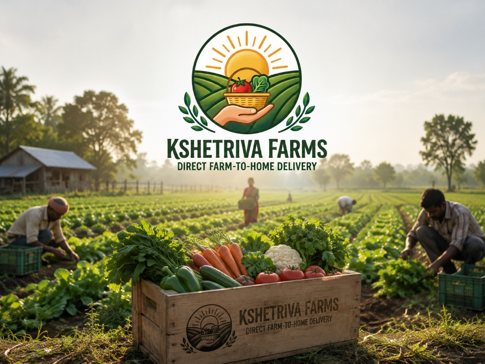
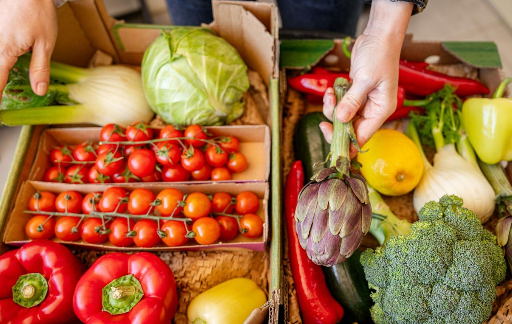
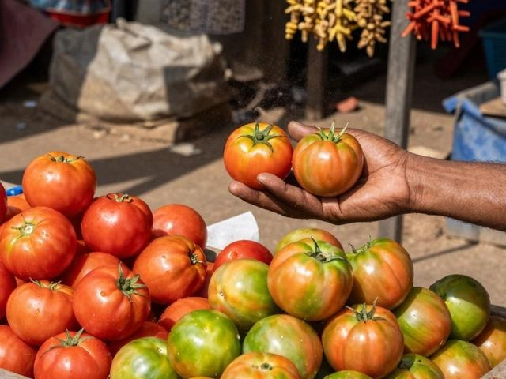
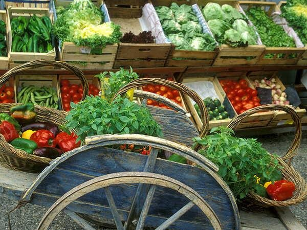
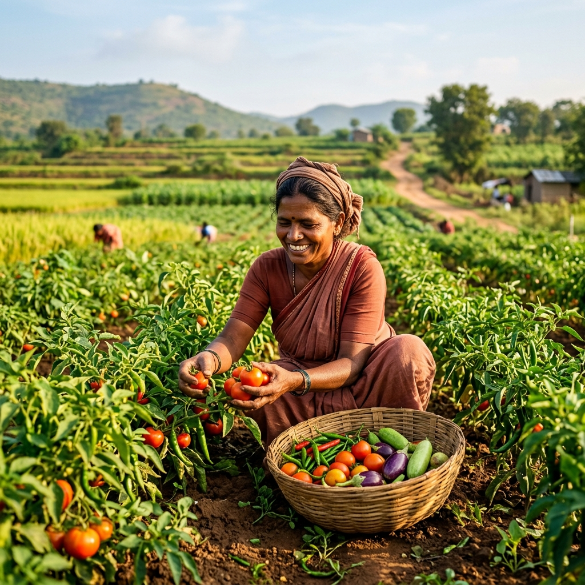
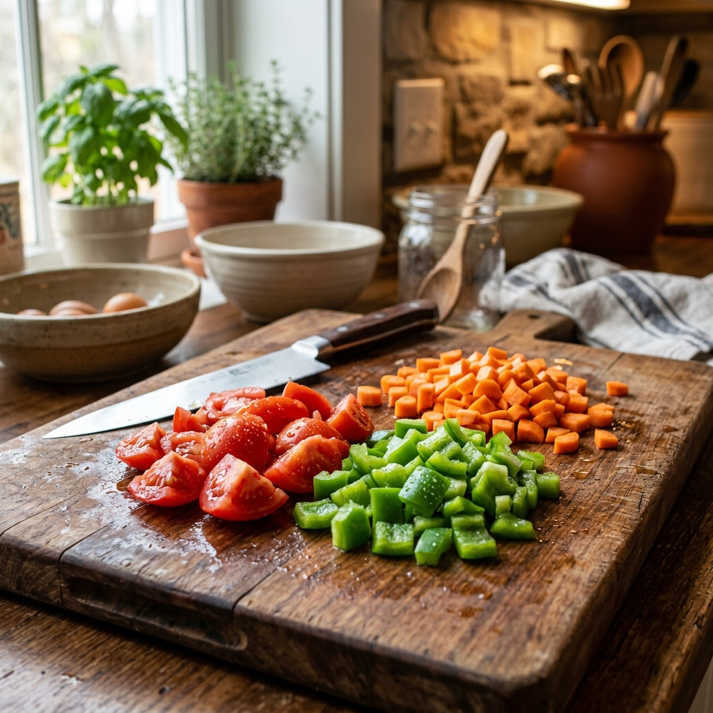

Have you ever bought vegetables from the market and noticed they become soft or spoiled within just a few days? One of the main reasons is a lack of freshness. Vegetables that come directly from farms usually last longer because they spend less time in storage, transport, and handling before reaching your home.
At Kshetriva Farms, we focus on delivering vegetables as fresh as possible so customers receive better quality produce that stays fresh for longer. We specialize in preservative-free vegetables, providing the freshest produce in Hyderabad delivered direct from farmers.
1. Less Time Between Farm and Home

Fresh vegetables start losing freshness soon after they are harvested. In traditional markets, vegetables often travel through many stages before reaching your table:
Farmer → Wholesale Market → Storage → Retail Shop → Customer
This traditional process can take several days. By the time the vegetables reach your kitchen, they may already be losing moisture, flavor, and essential nutrients. Farm-fresh vegetables reach customers much faster, which directly helps them stay fresh for more days in your refrigerator.
2. Less Handling Means Less Damage

Vegetables become damaged when they are handled too many times during loading, unloading, and transport. Even small scratches, pressure marks, or bruising can break the vegetable's protective outer skin, making them spoil and mold much faster.
Farm-fresh vegetables usually go through fewer middle steps, meaning less physical handling. Because we deliver direct, they stay:
- Cleaner and untouched by dozens of hands
- Fresher due to minimal atmospheric exposure
- Firmer with no bruising from rough sorting
- Healthier and visually pristine
Fewer touchpoints dramatically minimize transport shock and maintain the vegetable's natural quality.
3. Better Moisture and Natural Freshness

Freshly harvested vegetables naturally contain more moisture. This is why farm-fresh vegetables often look:
- Bright in color
- Crisp to the touch
- Juicy inside
- Full of life and natural flavor
When vegetables stay in cold storage or open baskets for long periods, they slowly dehydrate and lose water. That’s why older vegetables become soft, wrinkled, and dry very quickly once you buy them. Farm-fresh vegetables retain their natural hydration, extending their shelf-life at home.
4. Proper Selection Improves Shelf Life

At Kshetriva Farms, vegetables are carefully selected before delivery. Our harvesting and packaging processes ensure that only high-quality produce is packed for delivery. Good-quality, unblemished vegetables naturally stay fresh for longer when stored properly at home. Fresh produce also helps families reduce food waste because they can use the vegetables over several days without quick spoilage.
5. Better for Health and Daily Cooking

When vegetables stay fresh longer, they transform your daily dining experience:
- Meals taste noticeably better and more vibrant
- Cooking becomes easier and more satisfying with crisp ingredients
- Nutrients and vitamins are better maintained and digested
- Families waste less food, saving money and helping the environment
Ultimately, choosing fresh vegetables improves both health and convenience for the entire household.
Conclusion
Farm-fresh vegetables last longer because they reach customers faster, go through less handling, and maintain their natural moisture and freshness. At Kshetriva Farms, we are committed to bringing fresh vegetables direct from farmers to your doorstep in Hyderabad, ensuring preservative-free quality and care.
🌱 Fresh vegetables. Better quality. Longer freshness. 🌱